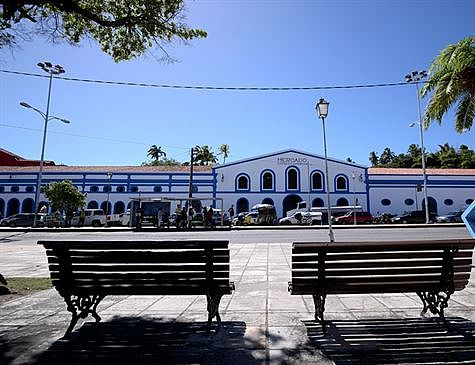

O Alto da Sé é uma região de Olinda muito visitada por turistas. Nesse local concentram-se alguns
pontos turísticos - como o Elevador Panorâmico e a Igreja da Sé -, além de lojinhas e barracas que vendem
artesanato.
Para quem quer chegar ao Alto da Sé, é mais vantagem subir pela Rua São Francisco, que tem uma ladeira menos
íngreme do que a rua da Ladeira da Misericórdia.
É um lugar legal para encontrar artesanato, quadros, lembranças etc.
Depois de uma completa requalificação estrutural, o equipamento, instalado no Largo do Varadouro, em Olinda, foi transformando em um grande Centro de Cultura Popular, inaugurado em 2018. O espaço de 6 mil metros quadrados conta com salas de exposição permanentes e temporárias, salas para oficinas de artesanato, dança e gastronomia, local para feiras sazonais, um novo teatro, 22 novas lojas, restaurante com paisagismo e uma livraria da Companhia Editora de Pernambuco. Além dos grandes espaços, são também atração do novo mercado elementos que contam a história do equipamento: um grande forno da antiga fábrica de doces e conservas Amorim da Costa, que funcionou no local entre as décadas de 1960 e 1990; e um painel de azulejo com figura de leão, que foi retirado do local para requalificação. Ponto turístico de Olinda, o Mercado Eufrásio Barbosa teve sua construção datada dos séculos XVII e XVIII. Entre 1894 e 1960 funcionou a primeira Casa da Alfândega de Pernambuco. Entre as décadas de 1960 e 1990, funcionou como fábrica de doce e, em 1990, foi reaberto como mercado público. Em funcionamento há mais de 20 anos em Olinda, o Museu do Mamulengo – Espaço Tiridá foi trazido da rua Laura Nigro, na Cidade Alta, para ocupar outras duas salas do novo Mercado Eufrásio.
